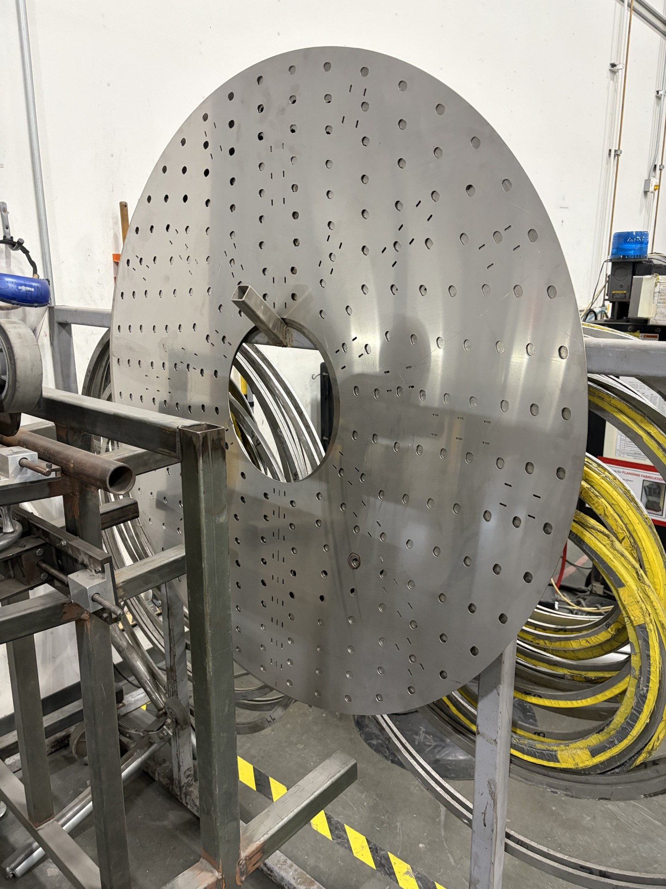

Problem Addressed
- Weld locations required repeated manual layout
- Layout depended on measuring around each duct and angle ring
- Repetitive measurement created opportunities for variation
- Similar assemblies required the same layout process repeatedly
Project 02 | Manufacturing Tooling
Reusable fabrication templates developed to establish consistent stitch-weld locations and reduce repeated manual layout during angle-ring attachment.
Designed reusable layout templates for attaching angle rings to round ductwork.
Each template corresponds to the applicable duct and angle-ring size and provides predefined locations for weld quantity and stitch spacing.
Fabricators can transfer the required locations directly from the template instead of separately laying out each stitch location with a tape measure.
The tooling converts a repeated measuring task into a simple, repeatable transfer process.

Reusable circular layout template with predefined holes and markings for establishing weld quantity and stitch locations across multiple duct and angle-ring sizes.